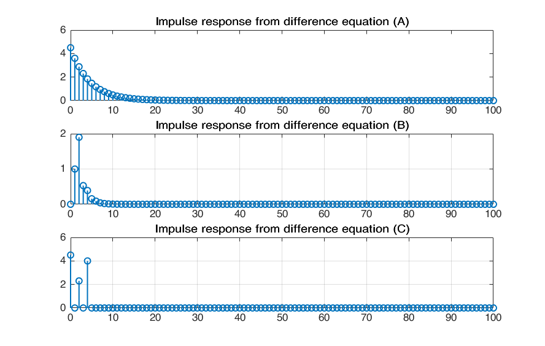
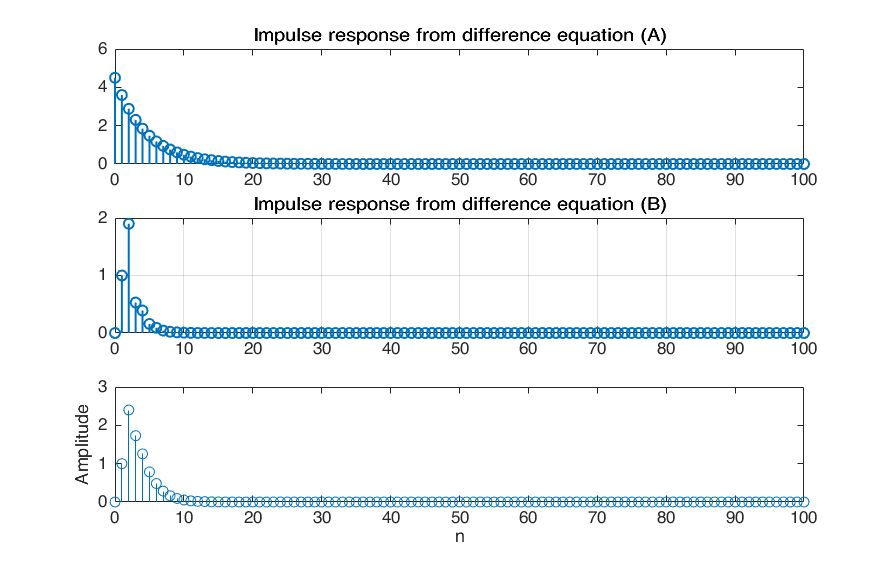
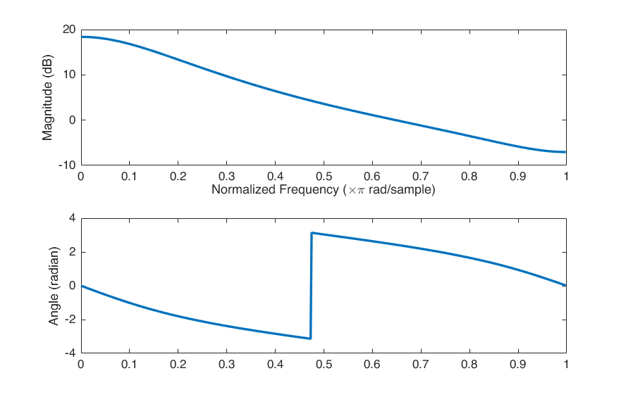
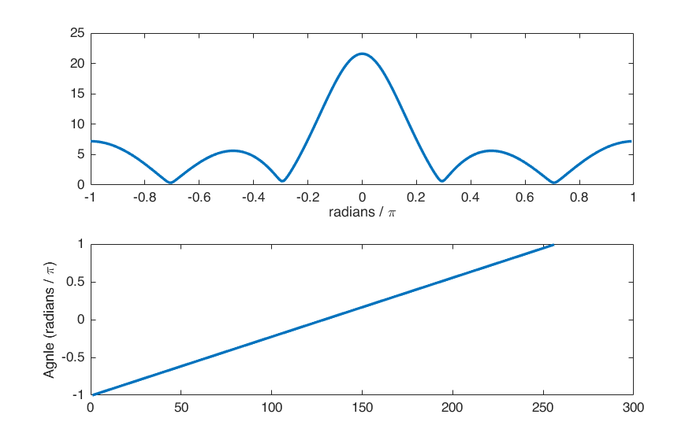
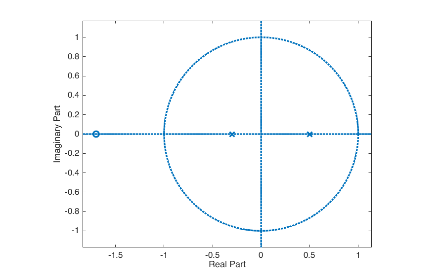

Digital Signal Processing MATLAB HW - q1
Professor: Dr. Sheikhzadeh Author: Amir Hossein Daraie - 9733023 E-mail: daraieamirh@gmail.com University: Amirkabir University of Technology
Contents
Clear recent data
clear; close all; clc;
Question 1
y(n) - 0.8 y(n-1) = 4.5 x(n)
n = 0:100; a = [1 -0.8 0]; % left hand side of difference equation b = [4.5 0 0]; % right hand side of difference equation [h,l] = dimpulse(b,a,length(n)); %find h from difference equation figure() subplot(311) stem(n,h,'LineWidth',1.2) title('Impulse response from difference equation (A)'); a = [1 -0.2 -0.15]; % left hand side of difference equation b = [0 1 1.7]; % right hand side of difference equation [h,l] = dimpulse(b,a,length(n)); %find h from difference equation subplot(312) stem(n,h,'LineWidth',1.2), grid set(0,'DefaultLineLineWidth',2); title('Impulse response from difference equation (B)'); a = [1 0 0 0 0]; % left hand side of difference equation b = [4.5 0 2.3 0 4]; % right hand side of difference equation [h,l] = dimpulse(b,a,length(n)); %find h from difference equation subplot(313) stem(n,h,'LineWidth',1.2), grid set(0,'DefaultLineLineWidth',2); title('Impulse response from difference equation (C)');
Question 3 (part a)
n = 0:100; x =((1/2).^n); a = [1 -0.2 -0.15]; b = [0 1 1.7]; y = filter(b,a,x); stem(n,y); xlabel('n'); ylabel('Amplitude'); [h ,w]=freqz(y); figure() subplot(211); plot(w/pi,20*log10(abs(h))) xlabel('Normalized Frequency (\times\pi rad/sample)') ylabel('Magnitude (dB)') subplot(212); plot(w/pi,angle(h)); ax = gca; ylabel('Angle (radian)') 
Question 3 (part b)
n = 0:100; x = ((1/2).^n); a = [1 0 0 0 0]; % left hand side of difference equation b = [4.5 0 2.3 0 4]; % right hand side of difference equation [h,l] = dimpulse(b,a,length(n)); %find h from difference equation out = conv(h,x); N = 256; X = fft(out, N); w = 2*pi * (0:(N-1)) / N; w2 = fftshift(w); w3 = unwrap(w2 - 2*pi); figure() title('DTFT') subplot(211) plot(w3/pi,abs(fftshift(X))) xlabel('radians / \pi') subplot(212) plot(w3/pi) ylabel('Agnle (radians / \pi)')
Question 3 (part c)
[h ,w]=freqz(y); figure() subplot(211); plot(w/pi,20*log10(abs(h))) xlabel('Normalized Frequency (\times\pi rad/sample)') ylabel('Magnitude (dB)') subplot(212); plot(w/pi,angle(h)); ax = gca; ylabel('Phase (radian)') syms z; ssys = (z^-1+1.7*z^-2)/(1-0.2*z^-1-0.15*z^-2); y_n = iztrans(ssys); pretty(y_n);
/ 1 \n / 3 \n
11 | - | 35 | - -- |
\ 2 / \ 10 / 34 kroneckerDelta(n, 0)
--------- + ------------ - -----------------------
2 6 3

Question 3 (part d)
b = [0,1,1.7]; a = [1,-0.2,-0.15]; figure() zplane(b,a);